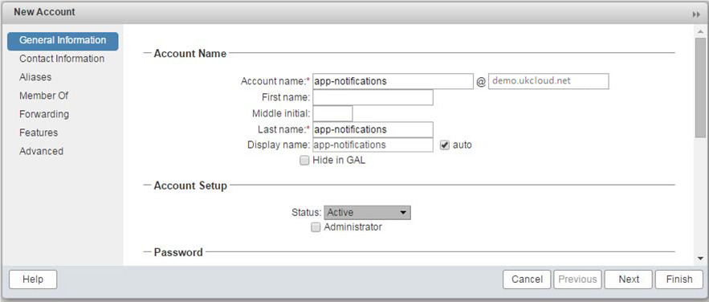
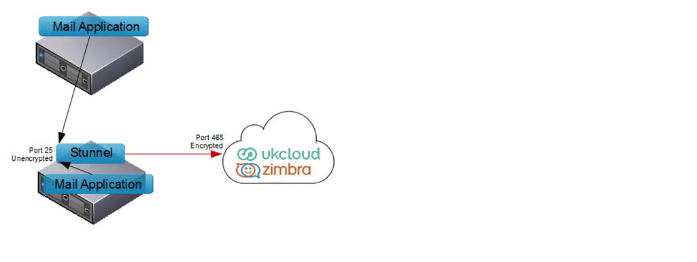

How to use UKCloud's email service with your application
Overview
Many customers who use UKCloud's IaaS need to be able to send email from, or receive email into, their applications. Although we don't have an SMTP relay service dedicated to this purpose, you can use our Email and Collaboration service to meet your needs. This can be particularly valuable if you're using the UKCloud Elevated OFFICIAL (formerly PGA IL3) platform, as it doesn't connect directly to the internet, but to secure government networks such as PSN and HSCN, where few mail relay providers are available.
In this guide, we'll walk you through the process for configuring your application to use our Email & Collaboration service.
UKCloud Email and Collaboration as a Service
The service provides enterprise-class functionality for end-users, on a per-mailbox, per- month pricing model. It offers several options for mailbox access, including POP3, IMAP4 and SMTP --- all with TLS (SSL) encryption --- as well as HTTPS. Exchange ActiveSync is also supported.
Although the service was designed with end-users in mind, there's nothing to stop you using the supported protocols to allow an application to access a mailbox in order to send or receive email. This will generally be achieved via SMTP or POP3 over TLS.
It's worth noting that there's a minimum commitment of 25 mailboxes with this service --- but they don't all have to be used.
Email on the Elevated OFFICIAL platform
The instructions in this document are written for the UKCloud Assured OFFICIAL (formerly PGA IL2)
platform, which is internet facing. If you wish to send and/or receive mail on the UKCloud Elevated OFFICIAL platform, the same general instructions apply, but there are a few differences to be aware of:
The Elevated mail platform is PSN facing, so you'll need a PSN- or GCF- registered domain name in order to use the service
The hostname for UKCloud's mail server is different, and will be provided to you once your order has been processed
By default, you'll only be able to connect to UKCloud's mail server using HTTPS --- you'll need to raise a service request in the Elevated portal to request access from your virtual data centre to the UKCloud mail server via SMTP, POP3 or IMAP as required
Getting started with Email and Collaboration
To start creating mailboxes on the Email and Collaboration service, you first need to decide on a domain name, which must be a real-world, registered domain name. You can use a new domain name, or simply delegate a sub-domain of your organisation's existing domain name.
You'll need to configure your chosen domain's MX record as mail.skyscapecs.net.
Once you've decided on a domain name and submitted your order form, the UKCloud team will configure your domain name on our platform and provide you with credentials for an administrator account. You'll be able to use this account to create mailboxes on the platform.
A mailbox will be needed for each email address you want to be able to send from, or receive to.
Configuring a mailbox for use with an application
This section takes you through the process of configuring a mailbox on UKCloud's Email and Collaboration platform for use with an application.
The first step is to create a mailbox for this purpose. Once your domain name and administrator accounts have been configured, you can do this by logging on to the Administrator console at https://mail.skyscapecs.net:7071
Create a new mailbox --- configure the account name and password as you normally would, but make sure you don't choose the option to force a password change:

Configure the remaining options in the New Account wizard to suit, then click Finish to complete the mailbox creation.
You're now ready to configure your application to connect to the mailbox to send and/or receive mail.
Sending outbound email
To send outbound email, your application needs to support SMTP authentication and TLS encryption. Provided this is the case, simply configure the following settings in your application:
SMTP Server/Mail relay host: mail.skyscapecs.net
Port number: 465
Use TLS*: Yes
Username/Password: as configured
From Address: as configured
Note
The mail server doesn't support upgrading from an insecure connection via the STARTTLS command. Your application will need to establish a secure connection before submitting SMTP commands.
Receiving inbound email
To receive inbound email, your application needs to support POP3 or IMAP4 over TLS.
Provided this is the case, simply configure the following settings in your application:
Mailbox server: mail.skyscapecs.net
Protocol: POP3S or IMAPS
Port number: 993 (POP3S) or 995 (IMAPS)
Username/Password: as configured
Applications without TLS support
Unfortunately, not all applications support sending or receiving mail over TLS. Some older applications may not support TLS at all, and some require use of the STARTTLS command for sending mail.
In this situation, you could consider using a 'wrapper' application, which will create the TLS tunnel independently of your application. A good example of such an application is stunnel: https://www.stunnel.org/index.html
Stunnel can secure SMTP, IMAP4, POP3 (or any other protocol) as follows:
A listener is created on your local system on a designated TCP port
Applications open unencrypted connections to this port
When an application connects, stunnel will open a secure connection to the UKCloud mail server
All commands sent by the application will be proxied directly to the UKCloud mail server over the secure connection
When the application terminates the insecure connection, stunnel terminates the secure connection
The diagram below shows stunnel encrypting SMTP traffic.

Note
An example working stunnel config is below to send smtp traffic on port 25 to zimbra on TLS port 465
[smtp]
accept = 25
client = yes
connect = mail.skyscapecs.net:465
;delay = yes
You can get full documentation, how to and FAQ guides from the stunnel website.
For more help
If you need more help, contact UKCloud Support.
Feedback
If you find an issue with this article, click Improve this Doc to suggest a change. If you have an idea for how we could improve any of our services, visit the Ideas section of the UKCloud Community.